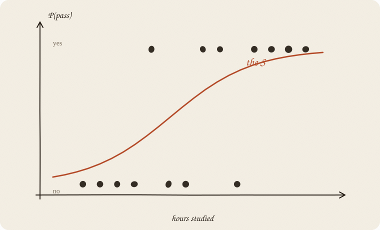
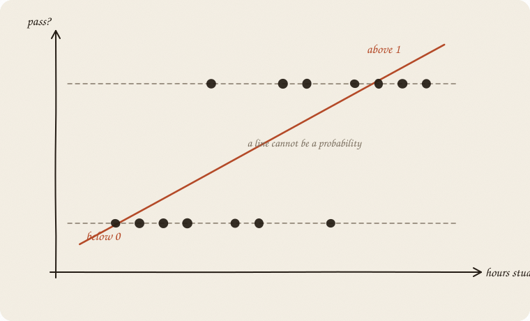
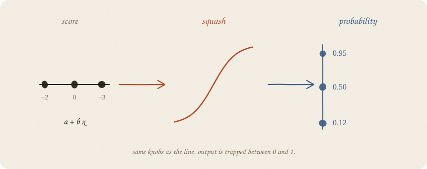
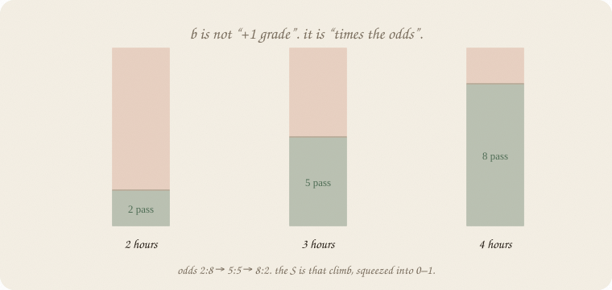
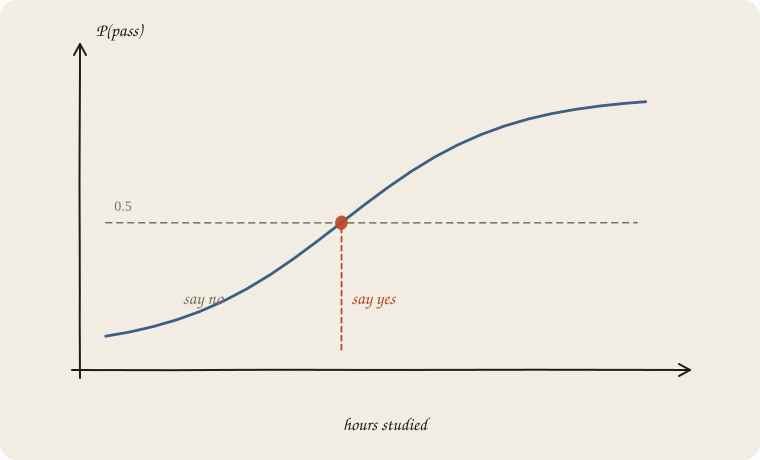

datazines · a sketchbook

Read 01 linear regression first. Same hours-and-grades world. Only now y is not a grade. y is did they pass?
Flip it like a notebook. One page = one idea. Done.
The old question: how does the grade depend on hours?
The new question: did they pass the exam?
Pass is not 4.75. Pass is yes or no. 1 or 0.
You still have hours, sleep, a tutor. Same levers. The output changed species.
A straight line will happily say “pass = 1.4” or “pass = −0.2”. Those are not answers. A probability lives in [0, 1]. That is the whole problem this sketchbook solves.
One person is 0 or 1. A share of yeses — 3 in 10 of this group passed — is the same machine. Still a number in 0–1. Not a free grade.
Fit an ordinary line to the 0/1 dots anyway. It slices through. Then it keeps going.

Above 1: “more than certainly pass.”
Below 0: “negative chance.”
The line does not know it is talking about a probability. It only knows up and down. Wrong tool for this y.
You still compute a score, the old way:
$$\text{score} = a + b \cdot \text{hours}$$
Then you push it through an S:
$$P(\text{pass}) = \frac{1}{1 + e^{-\text{score}}}$$

Score −2 → probability near 0.
Score 0 → 0.5. Coin flip.
Score +3 → near 1.
Same two knobs. New glasses. The S is called a sigmoid. People also say logistic curve. The name of this sketchbook.
On the grade line, b = 1 meant “+1 hour → +1 grade.” Clean.
Here b does not mean “+1 hour → +0.2 probability.” The S is not equally steep everywhere. In the middle it is steep. Near 0 and 1 it is almost flat. Extra hours help most when you were on the fence.
What is constant is a different count: how many yeses per no. People call that the odds.
50/50: one yes per no. Odds 1 : 1.
75/25: three yeses per no. Odds 3 : 1.
Say 2 hours is 50/50 (odds 1 : 1). One extra hour, if e^b = 3: now 3 : 1. That is 75/25. P only went 0.50 → 0.75. The pile of yeses tripled relative to nos. P did not triple.

Same factor on the odds, every time you add 1 to x. Not the same jump in P.
That factor is e^b. The name can wait.
If the algebra still feels slippery, keep this instead:
b says how fast the S climbs. Sign says up or down. Size says how dramatic.
The model gives P(pass) = 0.64. That is not yet “pass” or “fail.”
You pick a cut. Classic: 0.5.

Above the cut: say yes. Below: say no.
0.5 is a default, not a law. If missing a pass is costly, you may cut lower and call more people “likely.” The S did not change. You changed how brave the call is.
Accuracy on old people can look great and still be a bad cut for the next person. Same humility as R².
Logistic is not a free-form curve that wiggles wherever it wants.
The score is still linear. No bend in x. No “after 4 hours it stops helping,” unless you add that feature yourself.
If the yes-dots and no-dots are a mixed blob that no tilted S can separate, logistic will shrug politely and give you probabilities near 0.5. Then you want a different shelf (trees, forests).
Logistic = linear score + squash. Remember which part is the line.
If two levers are written in different units — hours and minutes — the bs are not comparable until you scale, same as ridge. One x (this notebook): skip it.
If you keep only one thing:
line on the inside, S on the outside, output is P(yes).
Exam world, house seed 7: hours, sleep, tutor. Eighty students — a crowd, not the thirty on the ridge page. y is pass/fail, not a grade. One lever, no scaler — the S is the lesson, not a fight between hours and minutes. Mixed units: scale first (02 ridge regression, page 10).
import numpy as np
from sklearn.linear_model import LogisticRegression
rng = np.random.default_rng(7)
n = 80
hours = rng.uniform(1, 6, n)
sleep = rng.uniform(4, 9, n)
tutor = (rng.random(n) > 0.6).astype(float)
z = -3.2 + 1.05 * hours + 0.25 * (sleep - 6.5) + 0.7 * tutor
passed = (rng.random(n) < 1 / (1 + np.exp(-z))).astype(int)
m = LogisticRegression().fit(hours.reshape(-1, 1), passed)
print(f"score = {m.intercept_[0]:.2f} + {m.coef_[0, 0]:.2f} · hours")
print("P(pass | 3 hours) =", round(m.predict_proba([[3]])[0, 1], 2))
print("P(pass | 5 hours) =", round(m.predict_proba([[5]])[0, 1], 2))
print("accuracy on these 80 =", round(m.score(hours.reshape(-1, 1), passed), 3))
score = -4.29 + 1.62 · hours
P(pass | 3 hours) = 0.64
P(pass | 5 hours) = 0.98
accuracy on these 80 = 0.838
Three hours: still a coin with a lean (0.64). Five hours: almost sure (0.98). The S climbed. Accuracy 0.84 is on these people — pride, like R² without a split. Pass is common here, so always-fail would look worse. When yes is rare, accuracy can clap for always-fail (03 metrics).
predict_proba is the S. predict is the 0.5 cut. Do not copy this unscaled one-column fit onto hours and minutes. The inside is still a line; size of a knob starts to matter.
| symbol | meaning |
|---|---|
| score = a + b x | the old line, still inside |
| P = 1 / (1 + e^(−score)) | the squash |
| y | 0/1 for one person, or a share of yeses |
| P | probability of yes |
| b | steepness of the S (log-odds) |
| 0.5 | default cut, not sacred |
| sigmoid / logit | names for the squash / its inverse |
Also called: squash = sigmoid · score = logit · S = logistic curve.
Reach for it when y is yes/no (or a fraction of yeses), you want a probability, and a linear score inside is honest enough.
Skip it when y is a free number (that is 01 linear regression); the yes/no cloud is a blob no S can cut (01 decision tree); the story is two ovals (02 LDA); you need a guaranteed 0 or 1 with no “maybe.”
Pays you: output stays in 0–1. Knobs stay readable. Fast, stable, a good first classifier.
Costs you: still linear on the inside. A threshold is extra politics. Rare events and tangled x need extra care (or a sequel with a tax). Levers in different units: scale, like ridge. This page did not.
First spine on the classification shelf. Twin that draws the clouds: 02 LDA. Many rooms, share 1: 03 softmax. A fence, not an S: 04 SVM. A boundary made of questions: 01 decision tree. If y is a count: 06 GLM.
Flip it like a notebook. One page = one idea.